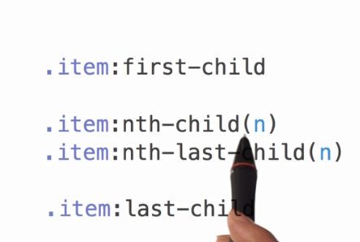

Web前端之旅之初识CSS/CSS选择器/单位~_~
初识CSS
- css(cascading style sheet)层叠样式表，它的主要作用是为我们的html标签添加各种各样的样式和修饰效果。
- 这里的css属于css2.0的知识点，css3.0的知识在后面的文章里面总结。
html页面如何引入我们的css样式
css的引入方式一共有4种：
1.行间样式：直接在html的标签里面写style属性。
2.页面级CSS：在head标签里面添加一个style标签。
<style type="text/css"></style>这里的type要不不写，不然就要写正确，只要书写错误，这个样式就不会生效
3.外链CSS文件： ---> 为了响应结构、样式、行为分离，建议使用该方式：在外部创建一个.css后缀的文件，然后在html里面引入这个外部的css文件即可。
在head标签里面加上一个link标签：<link rel="stylesheet" href="">其中link标签里的href属性写我们建立的css文件的地址，最好用相对地址的形式。
为什么要选择这种加载方式？
因为html和css属于异步加载,link加载不会阻塞html的加载
4.import方式引入(已经弃用)
在head标签里面写一个style标签，在第一行写上@import url();url里面写上css文件的地址，可以加引号也可以不加引号~
这种引入方式有几种缺点导致它现在被废弃使用：
1.必须写在第一行，若有多个则一起写在最前面。
2.ie6的环境下，最多只能使用31次，这个数字据说是阿里的开发人员一点一点测试出来的。
3.程序读到import的时候，会忽略掉import，等到html里面的所有内容包括图片在内的所有资源全都加载完之后才加载import的css文件，即import引入的css文件和html的加载是同步进行的。
这里有一点不得不说明的是，link标签引入和style标签修改样式二者之间并没有什么优先级，谁写在前面谁就先执行，写在后面的css文件会覆盖掉前面的css文件。有时候会因 为网速问题，link写在上面，但是link还没有加载进来，所以先运行了后面的style，这种问题是网速导致的，并不是二者本身拥有优先级的问题。
css选择器
css选择器的作用是让我们找到想要修改样式的元素，然后为其修改样式
选择方式有很多种：
1.id选择器
给元素添加一个id属性，这个id是唯一标识，一个元素只能有一个id，一个id也只能给一个元素。然后我们在css文件中，通过#id {}的方式，就可以选择到我们添加id的那个元素了。
<div id="demo"></div>
2.class类选择器
在元素的属性中写一个class属性，这个属性是为这个元素添加一个类名，每一个元素可以有多个类名，同一个类名也可以赋给很多个元素。然后在css文件中，通过.class {} 的方式来选择出添 加了类名的元素。
<div class="demo"></div>
3.标签选择器
如：div{}，只要是div的标签就会被选择出来。
这里有一个很重要的编程思想：我们先写css再写html，是我们自己在创造标签，而如果我们先写html再写css的话，是我们在添加样式。比如：我们在em加上font-weight: bold; 的样式，这样我们就创造了一个加粗斜体的标签。
4.通配符选择器
*{}：所有的标签都会被选择出来加上样式，body标签页包含在内。
在单独的样式后面加上!important之后，这个样式就会被赋予最高级的优先级，在没有特殊情况下，后面怎么添加样式都不会覆盖或者修改这个样式。 比如：background-color: red !important;没有特殊情况的话后面怎么加样式都是红色的。
5.属性选择器
优先级 !important > 行间样式 > id > class|属性 > 标签 > *
选择器权重值
注：在数学中无穷大+1依然是无穷大，但是在css选择器的权重值里面，无穷大+1 > 无穷大。
6.伪类选择器：link、visited、hover、active、结构性伪类

7.伪元素选择器
关系选择器
后代、子元素、后面的兄弟、紧跟其后的一个兄弟
解读顺序：从选择器的右边到左边读取，路径链越短效率越高，层级最多不超过四层。id和class也是可以使用关系选择器的哟~
为什么从右往左呢？
因为如果是从左往右读取的话，每找到一个父级标签，都要把它下面的所有标签都遍历一遍，看看有没有我们的下一个标签，这样是十分消耗性能并且速度非常慢的。
而如果是从右往左的话，不必遍历所有的节点，且需要遍历的点非常的少，这样的好处显而易见，速度非常快，而且不耗性能。
7.后代选择器
div p {}：给div下面的p加样式
8.子元素选择器
div>p {}：div直接子元素里面的strong，div的子元素里面的不是div的直接子元素的strong就不符合要求。
正确：
<div>
<strong></strong>
</div>
错误：
<div>
<p>
<strong></strong>
</p>
</div>
9.分组选择器
想同时给几种标签都加上相同的样式，不可能把四个标签都写一遍样式，因此可采用分组选择器。如：div, p, em, strong {} 这样的 写法，中间是用逗号连接的。这样四种标签就全都被选出来且都加上了统一的样式。
10.并列选择器
<div class="select"></div>使用div.select {}这种方式是只有div和.select同时作用在一个标签上的时候才会被选择 出来，书写的时候标签名放在前面，其他的放在后面。
执行效率
CSS选择器对性能的影响源于浏览器匹配选择器和文档元素时所消耗的时间，所以优化选择器的原则是应尽量避免使用消耗更多匹配时间的选择器~
提升CSS性能：
单位
CSS中的单位包括绝对单位和相对单位
绝对单位：px、in、pt、cm、mm...
px是pixels（像素）的缩写，用于屏幕显示器上，传统上一个像素对应于计算机屏幕上的一个点，而对于高清屏则更多。任何现代显示屏 都是由成千上万的像素组成，所以我们可以使用这些像素来定义长度。
CSS将光栅图像（如照片等）的显示方式定义为默认每一个图像大小为“1px”，一个“600x400”解析度的照片的长宽分别为“600px”和“400px”, 因此照片本身的像素并不会与显示装置像素（可能非常小）一致，而是与px单位一致。如此就可以将图像完整的与网页的其他元素排列起来。
相对单位：%（相对父元素）、em( 相对来说比较复杂，现在已经不建议使用，如果你要兼容的浏览器是现代浏览器的话，那么可以使用下面要 介绍的 rem 单位)、rem、vh、vw( 由于是新技术，还是有些浏览器不兼容，哪怕在移动端安卓4.3 以下也是不兼容，不过长远来说这也是必备的)。
如果对html元素设置font-size为百分比值，则是以浏览器默认的字体大小16px为参照计算，如62.5%即等于10px(62.5%*16px=10px)加了类名的元素。 注：chrome 浏览器最小的字体为 12px，如果设置 10px 也会渲染成 12px 。
em不同属性有不同的参照值：
font-size：em的计算方式是相对父元素的字体大小，1em等于父元素设置的字体大小。若父元素没有设置字体大小，则继续往父级元素查找， 直到有设置大小的；若都没有设置，则使用浏览器默认的字体大小。
其他属性（border/width/height/padding/margin/line-height）：em的计算方式是参照该元素的font-size，1em等于该元素设置的字体大小。若父元素没有设置字体大小，则继续往父级元素查找， 直到有设置大小的；若都没有设置，则使用浏览器默认的字体大小。
rem是相对根元素html的font-size来计算，因此参照物是固定的。（由于是新技术，不支持IE8以下（包括IE8），不过移动端可以放心使用）
改变根元素html的font-size值，rem单位大小也跟着改变，对于移动端适应各种屏幕大小还是挺有作用的~~~
vw、vh、vmin、vmax是基于视窗大小（浏览器用来显示内容的区域大小）来计算的。
网页中很多时候都需要用到满屏、或屏幕大小一半等，尤其移动端的屏幕大小各式各样，这几个单位就比较好用了~~~
vw：基于视窗的宽度计算，1vw等于视窗宽度的百分之一
vh：基于视窗的高度计算，1vh等于视窗高度的百分之一
vmin：基于vw和vh中的最小值计算，1vmin等于最小值的百分之一
vmax：基于vw和vh中的最大值计算，1vmax等于最大值的百分之一
最后有些要说~~~
一般不给标签加id，而是通过添加class类名来选择的，因为id代表唯一，一般用id来做标记，后台的php会提取出来id，然后换成他们的 标记，因此可能会导致我们的选择器选择不出来我们想要的标签。
写类名的时候，一定要注意语义化，要符合语义化标准，要用英文单词去命名，而不是用看不懂的abc之类的类名。